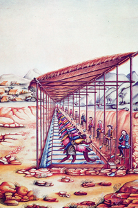
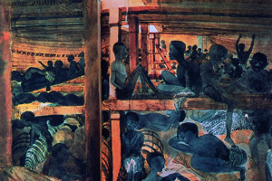
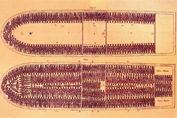

Lezione 13  Imperi Coloniali
Imperi Coloniali

-
300
492
-
350
310
-
330
382
-
330
472
-
310
320

AFRICA
Il luogotenente di marina Francis Meynell tenne un diario illustrato dei suoi viaggi: qui vediamo la stiva della nave negriera Albanoz, dipinta ad acquarello nel 1846. Le disumane condizioni di trasporto degli schiavi furono uno dei motivi che portarono le potenze europee, nel 1818, all’abolizione della schiavitù, che per qualche decennio fu solo formale.
BRASILE
Schiavi brasiliani lavano le pietre preziose estratte dalle miniere: durante il faticoso lavoro sono sorvegliati da guardiani armati di frusta, come ci mostra questa illustrazione settecentesca. Il Brasile abolì’ la schiavitù soltanto nel 1888.
ROTTA NEGRIERA
Nella sua essenziale semplicità, questa rappresentazione in pianta di una nave negriera inglese mostra le atroci condizioni di sovraffollamento e privazioni che comportava l’atroce e tuttavia tollerata e incoraggiata pratica della tratta degli schiavi. Prodotta alla fine del Settecento, l’immagine fu largamente usata dalla propaganda abolizionista.AFRICA
Dal Cinquecento all’Ottocento vengono deportate dall’Africa tra i 12 e i 15 milioni di persone.AMERICA
All’inizio del 1800 vivono in America circa 6 milioni e mezzo di schiavi africani.